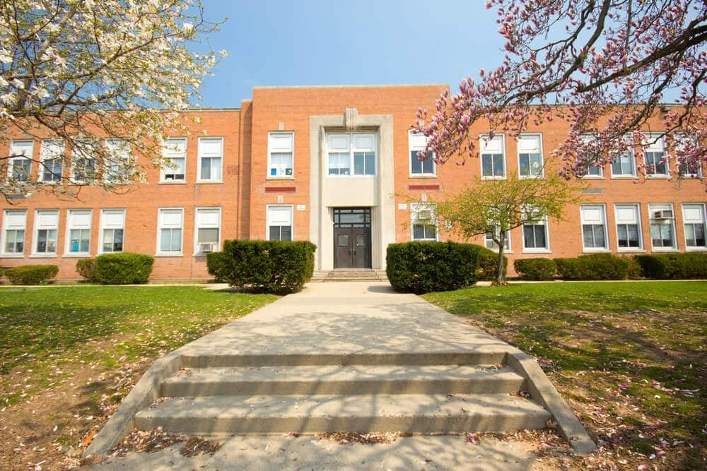
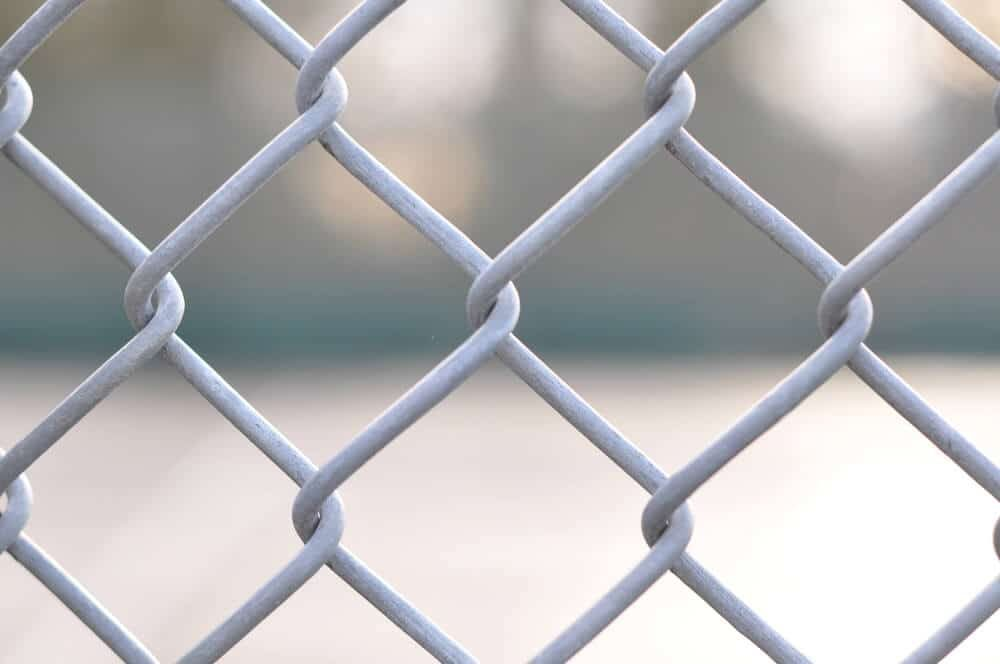

In This Guide
- A school fence defines the campus boundary, channels people to controlled entrances, and helps staff supervise where students are.
- Chain link, ornamental metal, and wood each suit different parts of a campus, depending on visibility, upkeep, and budget.
- Gates and entry points decide how well a fence works, and they need to allow emergency responders to reach the campus.
- A fence is one layer of a larger safety plan and works best alongside staff supervision, lighting, and clear visitor procedures.
Walk past almost any school and you will see a fence somewhere. It marks where the campus begins and helps adults keep track of who comes and goes. A fence does not make a school safe by itself, but it does give staff a clear, physical line to work with.
This guide from Big Easy Fence explains the general reasons schools use fencing, how the common materials compare, and what to think through before starting a project. It is written for administrators, facilities managers, and parents, and it stays with practical planning. Schools are commercial fencing projects, and the details are worth getting right.
What a School Fence Is Meant to Do
A fence can serve several jobs at once. Naming them helps you choose the right design.

Define the Campus Boundary
A visible line tells everyone where school grounds begin and end. That clarity helps staff, students, and visitors understand where they are supposed to be.
Control Who Comes and Goes
A fence with a few defined openings sends people through entrances that staff can monitor. Fewer open edges mean fewer unmonitored ways onto the property.
Help Staff Keep Track of Students
Fencing around play areas and pick-up zones keeps younger children inside a bounded space and away from streets and parking areas. See-through designs let adults watch the area from a distance.
Discourage Trespassing and Vandalism
Schools are often empty on nights and weekends. A fence makes casual entry harder and can discourage some after-hours trespassing and vandalism. It will not stop every determined person, which is why it works best with other measures.
Show School Identity
Fences can carry banners in school colors, a mascot, or notices for families. That makes the boundary a welcoming part of the campus and gives you a place to post general information.
A Fence Is One Layer of Campus Safety
Fencing is one part of a larger plan. It works best alongside trained staff, clear visitor check-in, good lighting, and well-rehearsed emergency procedures. Schools should decide how a fence fits into their own plan, and they should confirm any local requirements with the school district and the local authorities before starting.
A fence with unlocked gates or unmonitored openings does little. Decide who opens each gate, when, and how, so the physical barrier matches how the campus runs day to day.
Choosing a Fence Style for a School
Different parts of a campus have different needs. Visibility, upkeep, and appearance all matter, and no single material fits everywhere.
| Style | Visibility | Upkeep | Typical Use |
|---|---|---|---|
| Chain Link | See-through | Low | Playgrounds, athletic fields, and long perimeters |
| Ornamental Metal | See-through | Low to moderate | Front entrances and visible frontage |
| Wood Privacy | Blocks the view | Higher | Screening service areas and utility spaces |
Chain Link
Chain link fencing is strong, budget-friendly, and easy to see through, which makes it a common choice for long boundaries and play areas. Coated versions resist rust in our humid climate. The look is utilitarian, though, and some schools soften it with landscaping.

Ornamental Metal
Steel and aluminum fences with decorative tops look more polished, so they suit the front of a campus. Commercial metal fences are strong and lower in upkeep, and they keep the see-through view that supervision needs. They cost more than chain link.
Wood Privacy Panels
Wood can match a building's style and gives privacy where you need it, such as around dumpsters or mechanical equipment. It needs regular sealing and repairs, so it fits smaller areas better than a whole perimeter.
Gates, Entry Points, and Emergency Access
The fence line matters, but the gates decide how well the system works. A few things to think through:
- Number of entrances. Fewer entrances are easier to monitor, but the campus still needs enough for daily traffic.
- Vehicle and pedestrian gates. Buses, deliveries, and foot traffic all move differently, and separate gates help each flow.
- Emergency access. Gates and layout should allow fire trucks and other first responders to reach the campus quickly, and the plan should be reviewed with them.
- Reliable hardware. Latches, hinges, and locks take daily use and need to work every time.
For busy entrances, an automatic gate can control vehicle access. Automatic gates involve electrical work and safety features, so they should be designed and installed by professionals.
Planning a School Fence Project
- Walk the campus with staff. The people who supervise students every day know where the gaps and problem spots are.
- Check local requirements. Rules can affect height, materials, and access, so confirm them with the district and local officials.
- Think about weather. Hurricane season and constant humidity favor durable, coated, or rust-resistant materials.
- Plan for upkeep. Choose materials your maintenance staff can actually keep up with.
- Time the work. Scheduling installation around the school calendar limits disruption for students.
Getting Started
A good school fence starts with a clear picture of how the campus works. If you are planning a new fence or upgrading an old one, a conversation with an experienced installer helps you weigh materials, gates, and layout, and our team can walk your campus and provide a free estimate.
Planning a Fence for Your School?
Tell us about your campus, and we will go over fence styles, gates, and layout options that fit how it operates.